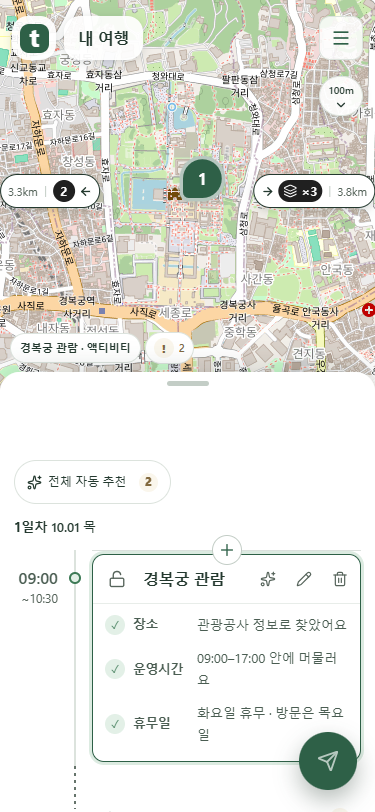
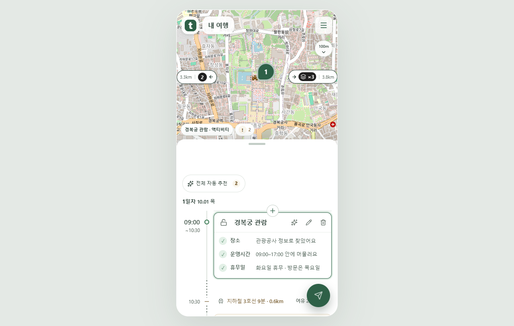
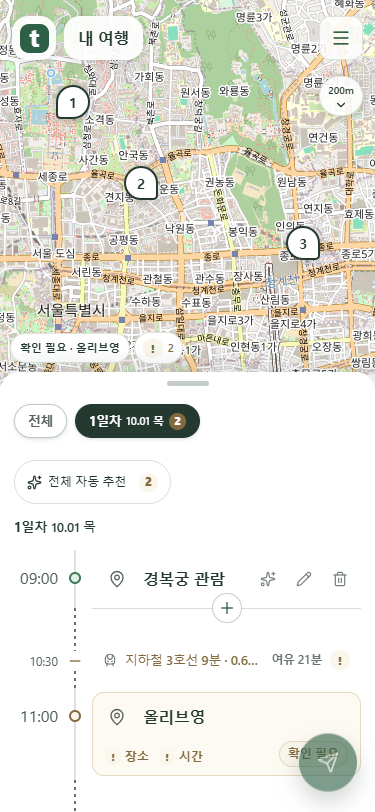
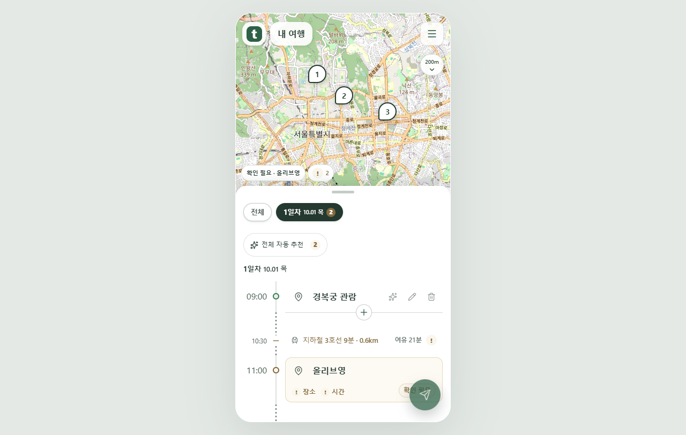
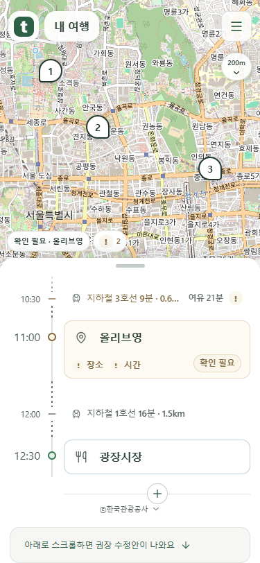
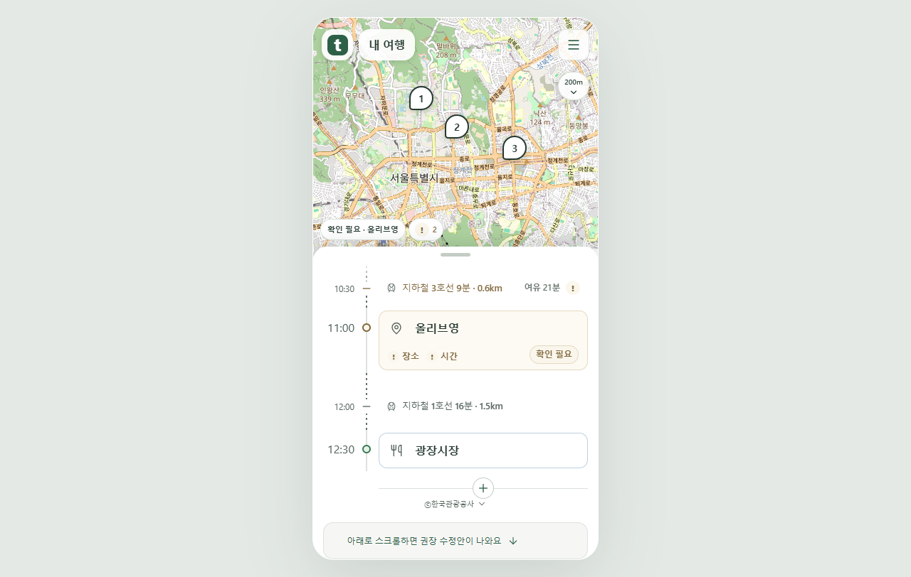

스택 개수 · 카드 · 날짜 · 마지막 추가
375px와1280px 실제 Chrome 촬영입니다. mock 서버 화면 반응22/22, 공개 cs 프로젝트 서버 응답·배포는 확인하지 않았습니다.
스택 아이콘 안 실제 개수
세 개를 묶은 검정 배지 안에 스택 ×3을 표시합니다. 지도 조작 직후 날짜 탭은 잠시 숨겨집니다.

375px 실제 Chrome 화면
1280px 실제 Chrome 화면최상단 날짜 탭과 아래 여백
탭 사이8px, 아래 첫 버튼과22px 간격입니다. 최상단에서는 유지하고 돌아오면 바로 표시합니다.

375px 실제 Chrome 화면
1280px 실제 Chrome 화면마지막 일정 뒤에 추가
목록 끝에서는 마지막 일정 아래 가로선 중앙의 +가 표시됩니다. 종료 시각 이후 초안으로 추가하고 저장합니다.

375px 실제 Chrome 화면
1280px 실제 Chrome 화면